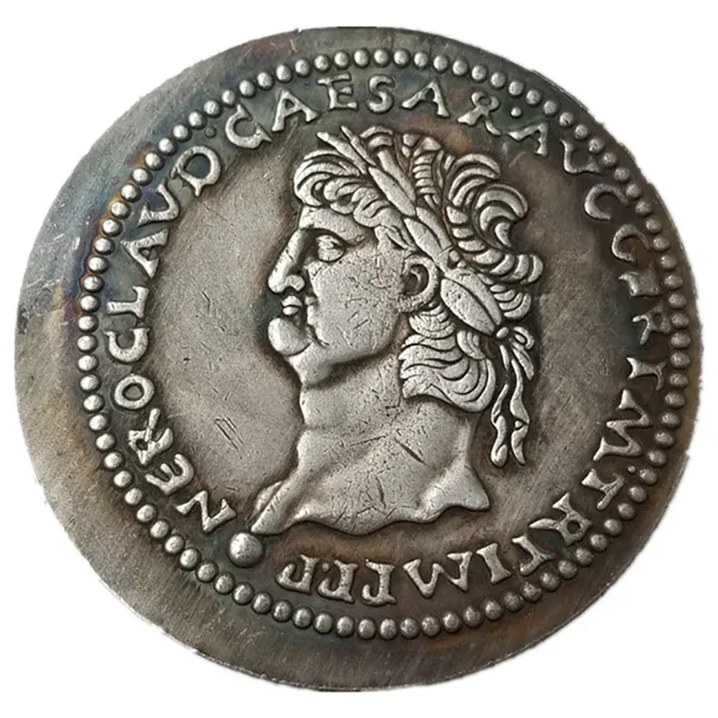

Catálogo de Moedas
Explore nosso catálogo de moedas históricas e raras, organizadas por período e origem.

Denário Romano
Moeda de prata usada na Roma Antiga, datada de cerca de 211 a.C.
Florim de Ouro
Moeda de ouro emitida na República de Florença no século XIV.
Stater da Lídia
Primeira moeda cunhada da história, feita de eletro, uma mistura de ouro e prata.
Dólar de Prata
Moeda dos Estados Unidos emitida em 1921, parte da série Morgan Dollar.